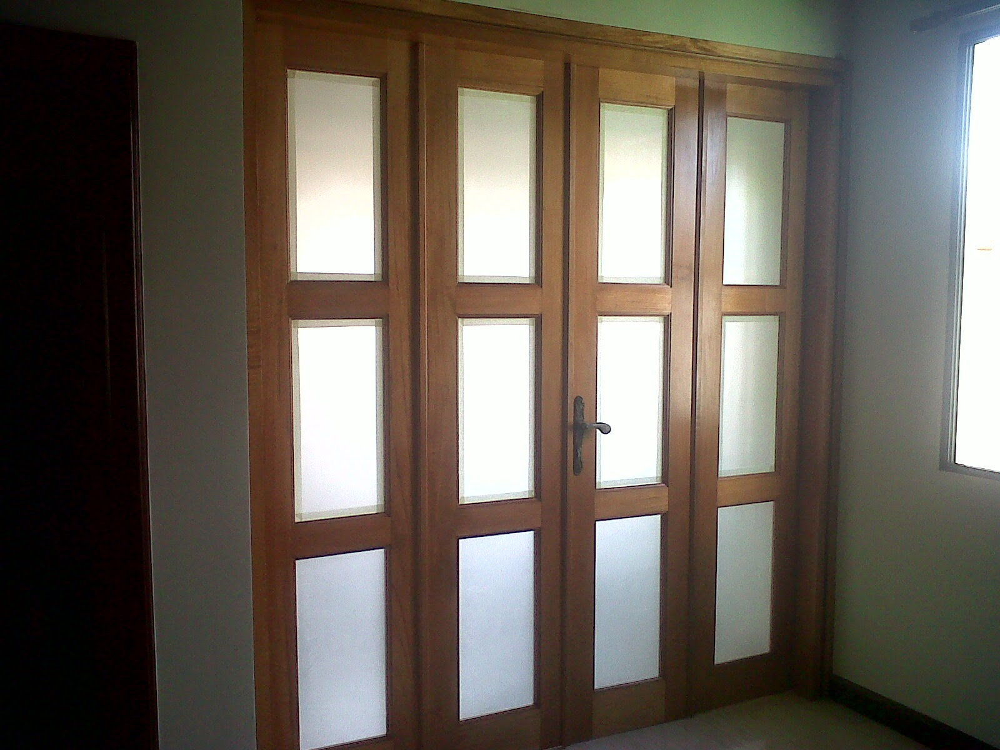
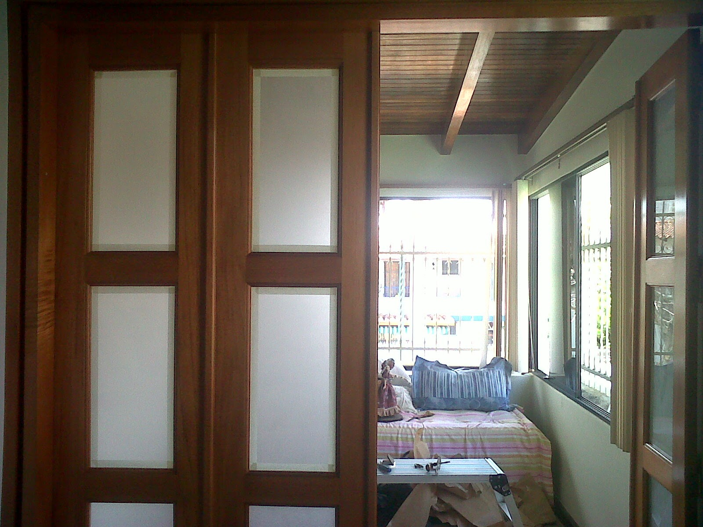
.jpeg)
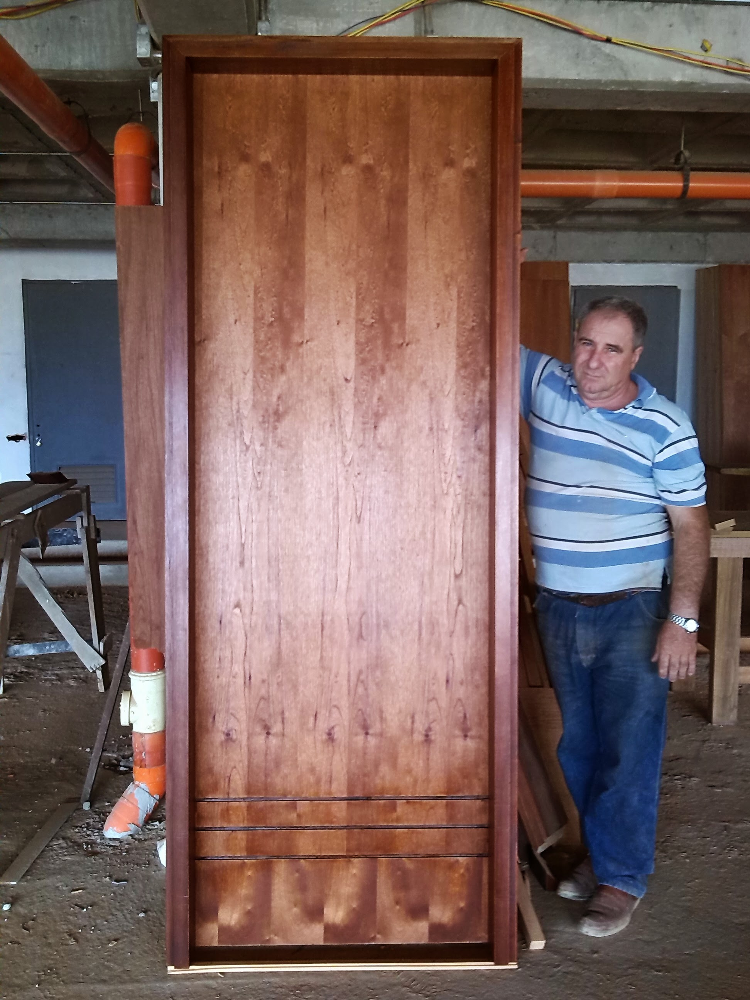
Puertas con carácter
Diseñadas para cada entrada, ambiente y forma de vivir.
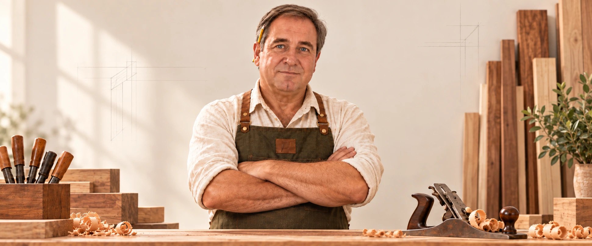
Puertas, muebles y espacios en madera a medida en Caracas.
Hablemos de tu proyectoTRABAJOS REALIZADOS
La madera da forma
a mejores espacios.



Diseñadas para cada entrada, ambiente y forma de vivir.


Hechos para acompañar tus espacios durante años.

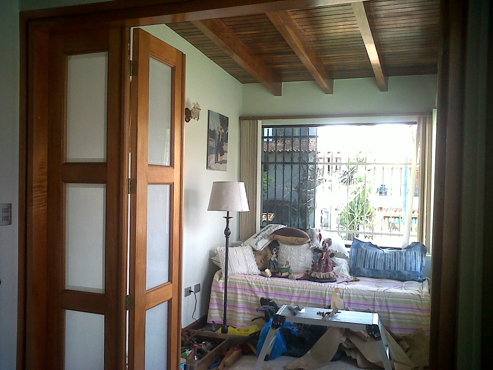
Detalles que transforman una terraza, un techo o un interior.
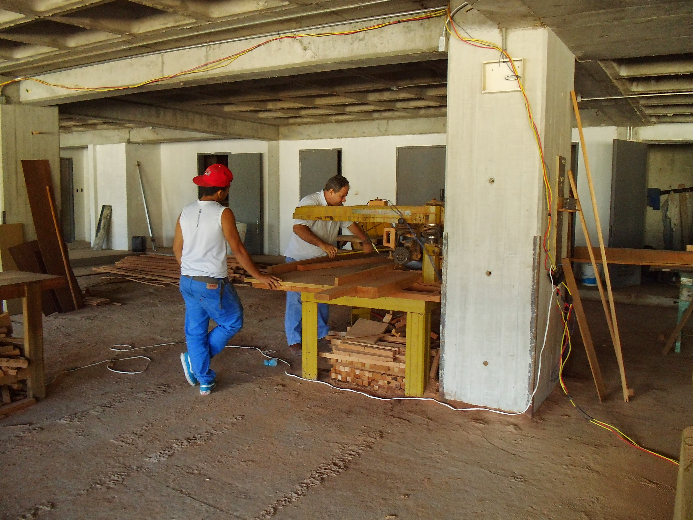
Hablemos de tu idea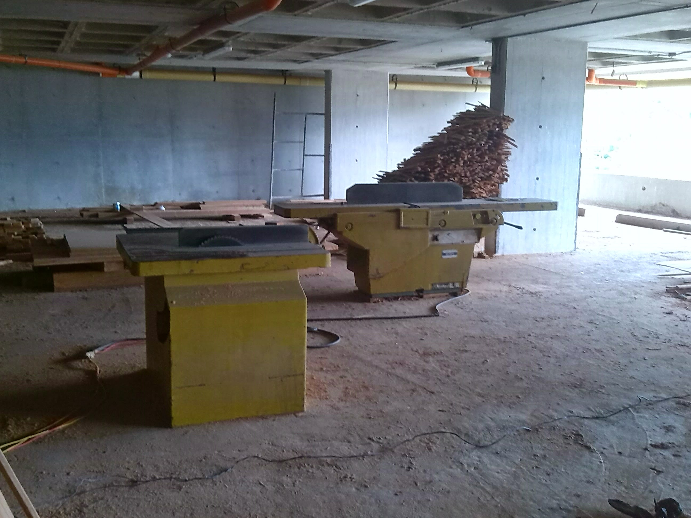
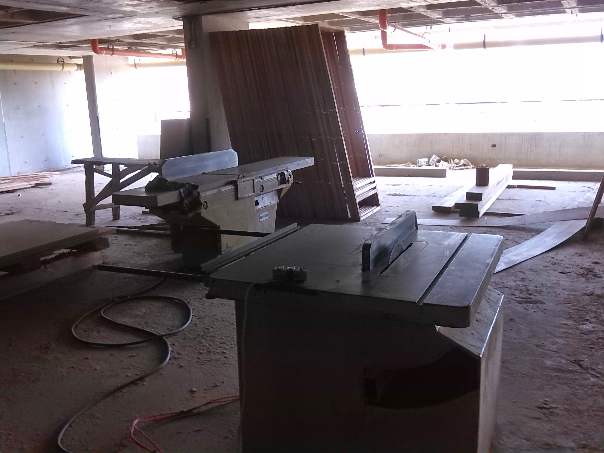
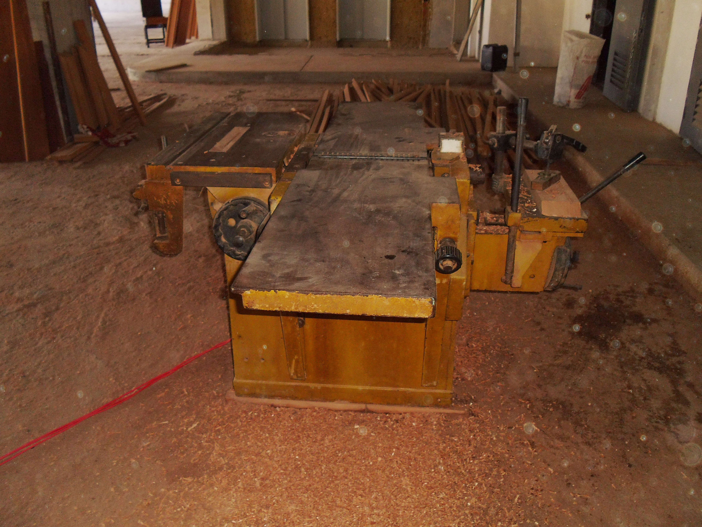
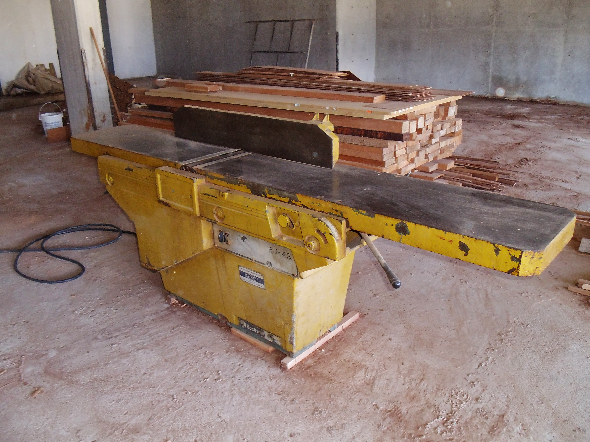
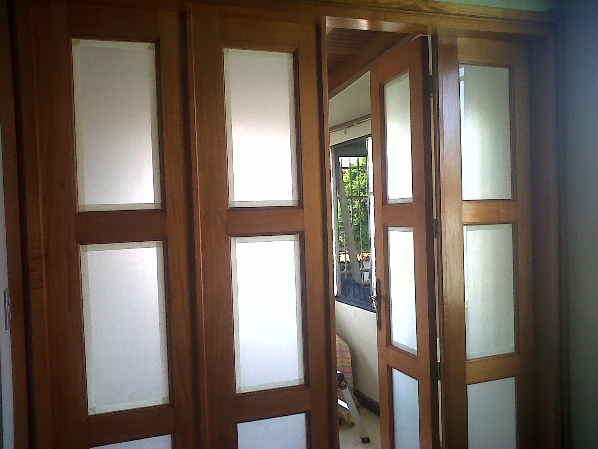
Medimos, cortamos y cuidamos cada unión en nuestro taller.
Una selección de trabajos realizados por Carpintería Valdevez. ¿Tienes una idea? Conversemos por WhatsApp.
ASÍ EMPIEZA
Cada proyecto
tiene su propio ritmo.
Nos cuentas qué necesitas, dónde irá y qué quieres que transmita.
Elegimos madera, medidas, acabado y la solución que mejor se adapta al espacio.
Trabajamos cada pieza en el taller y coordinamos la entrega o instalación.
UN OFICIO QUE PERDURA
En 1989, Porfirio Gomes fundó Valdevez en Caracas. Trajo consigo su origen portugués y una manera de entender la carpintería: dedicarle a cada pieza el tiempo y las manos que merece.
Hoy, ese oficio toma forma en puertas, muebles y espacios hechos a la medida de cada idea.
Porfirio GomesFUNDADOR · CARPINTERÍA VALDEVEZMATERIA PRIMA, GRANDES IDEAS
Cada especie tiene una personalidad distinta. Te ayudamos a elegir la indicada para tu proyecto.
La dureza es orientativa. Puede variar según la especie, densidad, humedad, secado y procedencia. Confirmamos contigo la madera disponible y su mejor aplicación. Para Vera / Palo Santo verificamos siempre la procedencia legal antes de cotizar.
Consultar disponibilidadTODO EMPIEZA CON UNA IDEA